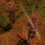
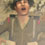

Production Notes - Scene 9 - The Big Adventure
This is the second scene in the film for which the visuals were carefully crafted to match the music.
The majority of this scene is largely musical, using the entire "The Big Adventure" track followed by the final portion of "The Last Stand".
I perhaps got myself into a bit of trouble with this scene in the online version.
Part One ends halfway through - this was with the intent of ending it with a cliffhanger.
It has also been said that this was not as visually fulfilling as the opening scene in the film.
That's true, as it was intended to be a "lesser" battle sequence.
I did not want the battle in this scene to visually overshadow the final battle that takes place in Saint-Lambert-sur-Dives.
It was also important that the most visually impactful portion of this scene be the flashback sequence, which takes place at the beginning of Part Two.
If I have any one regret with this scene, it's that I perhaps could have put a bit more into clarifying exactly what is taking place.
I became rather obsessed with matching musical cues, that I may have neglected that aspect.
Here is a quick run-down of the events during the battle:
- Sergeant Norfolk spots two groups of Germans, each consisting of two soldiers. The intent here is that these soldiers became detached during the fighting in the Falaise Gap, and up until now had gone unnoticed by any Allied troops (this tidbit isn't really necessary information; it can be gleaned from the dialog later in the film anyway).
- Corporal Devin orders Lance and Cooper to handle "the two off to the right", while he and Alex handle the others.
- Devin fires a warning shot at his targets, and they immediately spot him and give up.
- This alerts the other two Germans before Lance and Cooper get to them, and they're spooked by the gunfire.
- Lance fires his warning shot, but one of those soldiers engages. Lance is forced to kill him.
- The other German soldier is hidden from Lance and Cooper's view, and takes a potshot in the direction of Devin and Alex. This portion in particular I might have done better... Perhaps by using a first-person view of Lance seeing the gunfire aimed in Devin's direction.
- Lance rushes over to get an angle on the soldier, but he jumps up and fires at Lance. Lance is hit.
- Angered, Sergeant Norfolk throws a grenade and kills the soldier.
Iconic imagery:

The squad tirelessly travels towards Saint-Lambert-sur-Dives, Lance's final destination, as The Big Adventure plays triumphantly. The "Squad Moves" scene was used extensively during this sequence, but the iconic moment was intended to be the scene looking down on the squad as they trudge through the forest in heavy rain. This plays during a string section decrescendo.

Lance is shot, just as The Big Adventure comes to a close and transitions to The Last Stand. A close-up camera angle looks down on Lance, his face in an expression of pain. This shot only worked as intended on the high-resolution version of the film; the expression on his face was lost in the online version.
Visual editing you may not have noticed:
- From end-to-end, this scene is just over 3 minutes and consists of 61 shots - the second-most complex scene in the film.
- During the opening moments of the scene, I wanted to give the impression that they were moving from an open plains area to a forested area. I used three completely different settings of set dressing: the first with just some anti-tank barricades, the second with some trees and shrubs off to one side, and the third with trees and shrubs covering the entire Rural Field set.
- As the squad travels from the open plain, through the forest, and ultimately to the battlefield area outside Saint-Lambert-sur-Dives, you can see the dirt on their uniforms change. It goes from none, to mucky during the rain, to hardened and dusty.
- As the squad nears Saint-Lambert-sur-Dives, there is a brief close-up shot of Lance's hands. This is to show his wedding ring, and is a tie-in to the current date (their one year anniversary), as well as to the flashback shot of Stephanie looking down at her ring on their wedding day.
- As the squad mourns Lance's death, there is a shot of the two captured Germans looking on. This is actually "Showing a Card", and was filmed on the Bluescreen set.
Musical cues you may not have noticed:
- There is a quick harp-like noise that starts when the scene changes to night-time at the beginning (when we cut to Alex patrolling).
- A trumpet cue matches the scene of the three squad-mates sitting around the fire.
- A second trumpet cue matches the fade to the next morning, as the squad travels through a forested area in the rain.
- A triumphant trumpet cue matches the scene change to the side-view of the squad.
- A string section decrescendo matches the scene change to the top-down-view of the squad.
- The next trumpet cue matches the fade to the next morning, as the squad travels through a battle-worn area nearing Saint-Lambert-sur-Dives.
- The next triumphant trumpet cue matches the switch to Norfolk spotting the lost German soldiers.
- A sudden flute cue matches Alex running forward as he follows Devin on the battlefield.
- Each string section cue matches an specific action as Devin fires warning shots at his two German soldiers, and they surrender.
- The next trumpet cue matches the switch to the other two German soldiers, as they're spooked by the sound of gunfire.
- The next triumphant trumpet cue matches Lance firing back at the German soldier who's engaged them.
- The string section cue matches Lance as he rushes to the aide of Corporal Devin.
- There's a sort of percussion cue that matches the German soldier as he stands and aims at Lance.
- The final crescendo matches Lance being shot. :( The music then cross-fades into the final portion of The Last Stand.
- Each portion of the flashback sequence strikes a musical cue: the brief moment Lance sees Cooper tending to him (string section decrescendo), remembering his first meeting with Stephanie at a bar (string section decrescendo followed by an oboe), and remembering his wedding day as Stephanie looks down at her ring (a soft harp and flute).
Sound editing you may not have noticed:
- The rain sound that plays as they travel through the forested area is actually ambient noise created in Magix Music Maker.
- Because I wanted "The Big Adventure" playing full bore in the foreground, I had to jack up the volume of the few pieces of dialog here by some 300%.
- The humming sound in the flashback sequence is made up of quiet white noise, mixed with a deep tone. The volume was brought up to cut the tone off so that it was a partial sawtooth tone, with the hopes that this would be a somewhat unnerving noise. This noise was actually mixed together in Audacity with the dialog during this sequence. The echo effect in Lance and Stephanie's voices is actually a reverb filter, produced in Ulead VideoStudio. In total, there were 12 tracks of audio mixed together here (not including the music).
- All the ambient background noise heard as the squad mourns Lance's death was hand-placed. It includes a crow cawing as Cooper looks up, and some sudden heavy winds as Devin cries momentarily, and again when he's carrying him. The heavy wind noises were actually taken from the start of one of the game's bombs-away sound effects. ;)
The Riley Programming Site

{kind=link}
{kind=link}